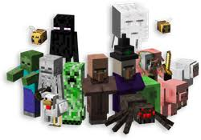
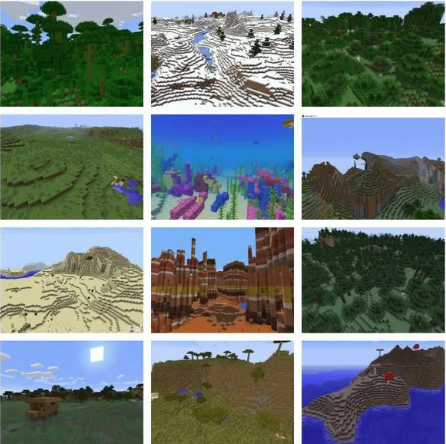
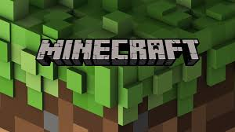

Minecraft:
Informações do Jogo Quadrado

Criaturas Hostis
- Creeper: A criatura mais icônica do Minecraft, explode quando se aproxima do jogador
- Zombie: Morto-vivo que persegue o jogador durante a noite
- Esqueleto: Atira flechas à distância
- Aranha: Neutra durante o dia, hostil à noite
- Enderman: Criatura alta e escura que teleporta
Animais Passivos
- Vaca: Fornece leite, couro e carne
- Porco: Pode ser montado com sela
- Ovelha: Fornece lã de várias cores
- Galinha: Fornece ovos, penas e carne
- Cavalo: Pode ser domado e montado

Biomas do Minecraft
O mundo do Minecraft é composto por diversos biomas, cada um com suas características únicas. Alguns dos biomas mais comuns incluem:
- Floresta: Rica em árvores e vida selvagem
- Deserto: Áreas áridas com cactos e areia
- Tundra: Regiões frias com neve e gelo
- Pântano: Áreas úmidas com água rasa e vegetação densa
- Montanhas: Terrenos elevados com penhascos e cavernas

Modos de Jogo
Modo Sobrevivência
No modo sobrevivência, você precisa coletar recursos, construir abrigos e defender-se contra monstros hostis. Você tem vida limitada e precisa se alimentar para sobreviver.
Modo Criativo
No modo criativo, você tem recursos infinitos e pode voar. É perfeito para construir grandes projetos sem se preocupar com a sobrevivência.
Modo Aventura
Projetado para mapas customizados, onde você só pode quebrar blocos com as ferramentas corretas.
Modo Espectador
Permite que você observe o mundo sem interagir com ele, voando através de blocos e observando outros jogadores.

Curiosidades
- Minecraft é o jogo mais vendido de todos os tempos, com mais de 300 milhões de cópias vendidas
- O mundo do Minecraft é praticamente infinito, com mais de 60 milhões de blocos de área
- Existem mais de 400 tipos diferentes de blocos no jogo
- O jogo está disponível em mais de 20 plataformas diferentes
- A Microsoft comprou a Mojang (criadora do Minecraft) por 2.5 bilhões de dólares em 2014
Voltar para a pagina inicial